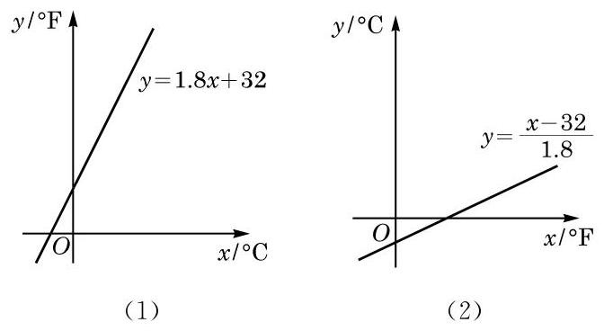
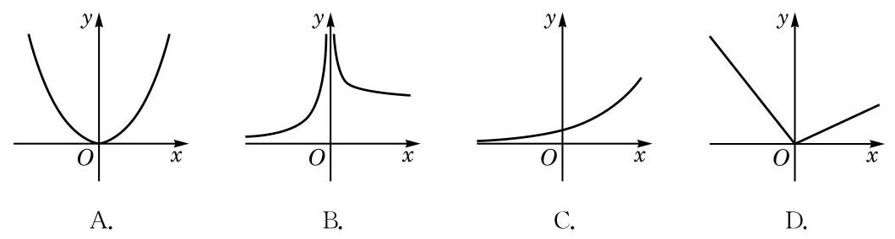

例题 1
例 1 若 ，并设 是 的反函数，求 。
学生阅读版 / 沪教版高中数学
必修第一册
第5章函数的概念、性质及应用 · 保留教材主线与原题
教材与正式教参整合
在进行摄氏度（）和华氏度（）两种温度单位换算时会发现，有时选用相同的数据如表 5-4 所示，但所建立的函数关系和作出的图像不同，如图 5-4-1 所示。
表 5-4 华氏度与摄氏度的转换
| 摄氏度/ | 0 | 20 | 35 | 100 | 115 |
|---|---|---|---|---|---|
| 华氏度/ | 32 | 68 | 95 | 212 | 239 |

图 5-4-1
这是为什么呢？原来这两个函数所选取的自变量和函数值恰好相反。看似完全不同的两个函数关系式和图像都正确反映了两种温度单位之间的转换关系，前者将摄氏度转换为华氏度，而后者恰好相反。
从函数表达式来看，在函数 中， 是自变量， 是 的函数。但从 这个关系式中解出 ，就得到了 。这样，根据这一转换关系，对于在某一个范围内的每一个 值，同样有唯一的 与之对应。也就是说，也可以把 看成自变量， 作为 的函数。这时，我们就说函数 是函数 的反函数。
由于习惯上函数的自变量用 表示，在图像上作为点的横坐标，而函数值用 表示，在图像上作为点的纵坐标，因此 的反函数通常写成 。
例如，函数 的反函数为 ，函数 的反函数为 。
一个定义域为 的函数 存在反函数，当且仅当对于其值域 中的每一个值 ，在定义域 中仅存在一个 ，满足 。也就是说，如果函数 在定义域 上不同的 处所取到的函数值也不相同，那么 就存在反函数。因此，在定义域上的严格增函数或严格减函数均存在反函数。
从反函数的定义可知：如果函数 存在反函数 ，，那么函数 的反函数就是 。也就是说， 及 是互为反函数的。
函数 的定义域就是 的值域，函数 的值域就是函数 的定义域。
例 1 若 ，并设 是 的反函数，求 。
例 2 求下列函数的反函数：
(1) ；
(2) ；
(3) 。
(1) ；(2) ；
(3) ；(4) 。
为了研究函数与其反函数的图像的特征，我们需要一个如下的命题：
命题 在平面直角坐标系中，点 与点 关于直线 成轴对称。
证明 当 时，点 与 重合，且在直线 上，结论成立。
当 时，点 与 是不重合的两点，要证明它们关于直线 成轴对称，即证直线 是线段 的垂直平分线。
即
因 ，故该集合为 。
所以，线段 的垂直平分线是直线 ，因而点 与点 关于直线 对称。
作为指数函数和对数函数的图像关系在一般函数中的推广，我们有
性质 互为反函数的两函数的图像关于直线 成轴对称。
证明 设函数 的反函数为 ，。
若 为函数 图像上任取的一点，则必有 ，且 。这样，，且根据反函数的定义，，因此 关于直线 的对称点 在函数 的图像上。
另一方面，因为 的反函数是 ，由上述， 图像上任一点 关于直线 的对称点 在函数 的图像上。
综上所述，互为反函数的两函数的图像关于直线 成轴对称。
在求一个函数 的反函数时，一般要经历下述三个步骤：求出反函数的定义域（即原来函数的值域）；解方程 ，求出 关于 的函数表达式；再交换 与 。
正是将 和 对换，即将点的横纵两个坐标作了对换，才导致了函数与其反函数的图像关于直线 对称。
例 3 求函数 的反函数，并在同一坐标系中作出函数 和它的反函数的图像。
例 4 已知函数 的图像经过点 ，而其反函数的图像经过点 ，求实数 、 的值。

(第 2 题)
(1) ；(2) ；(3) 。
(1) ；(2) ；(3) 。